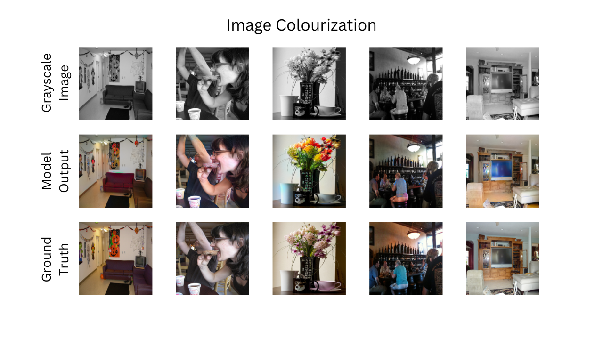
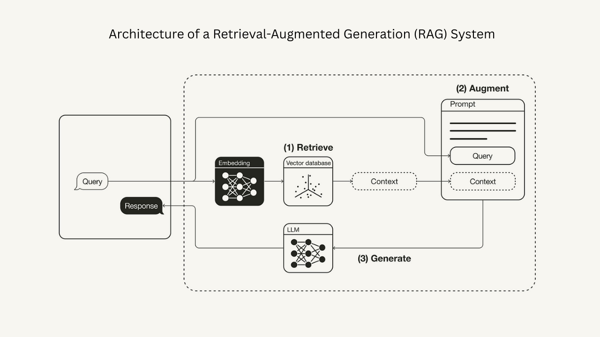
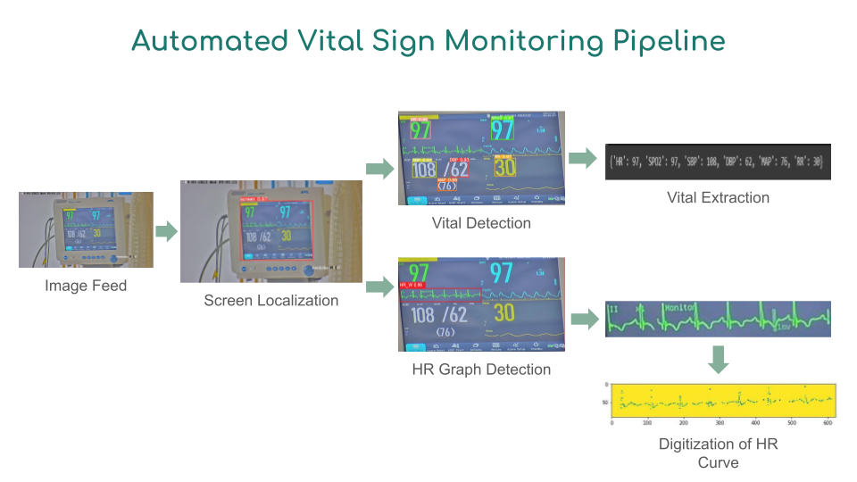
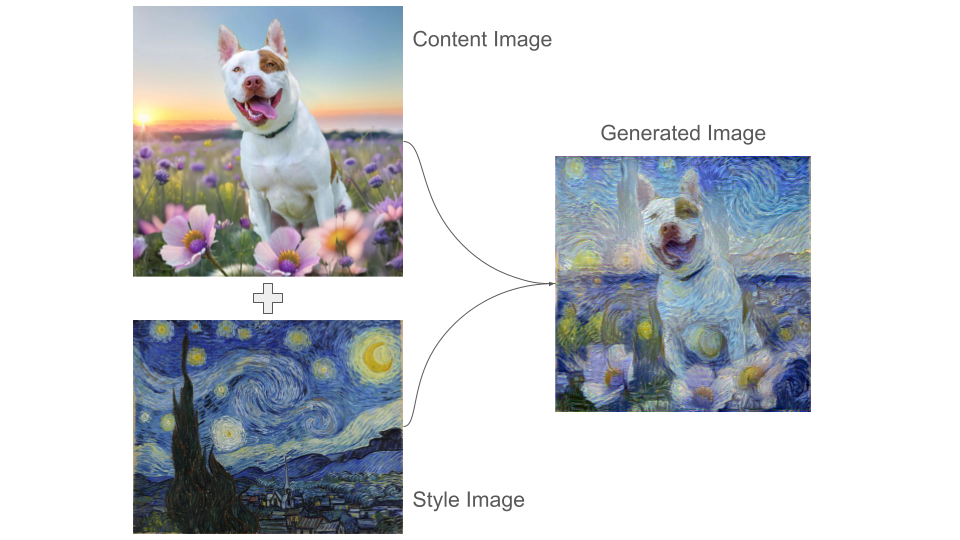
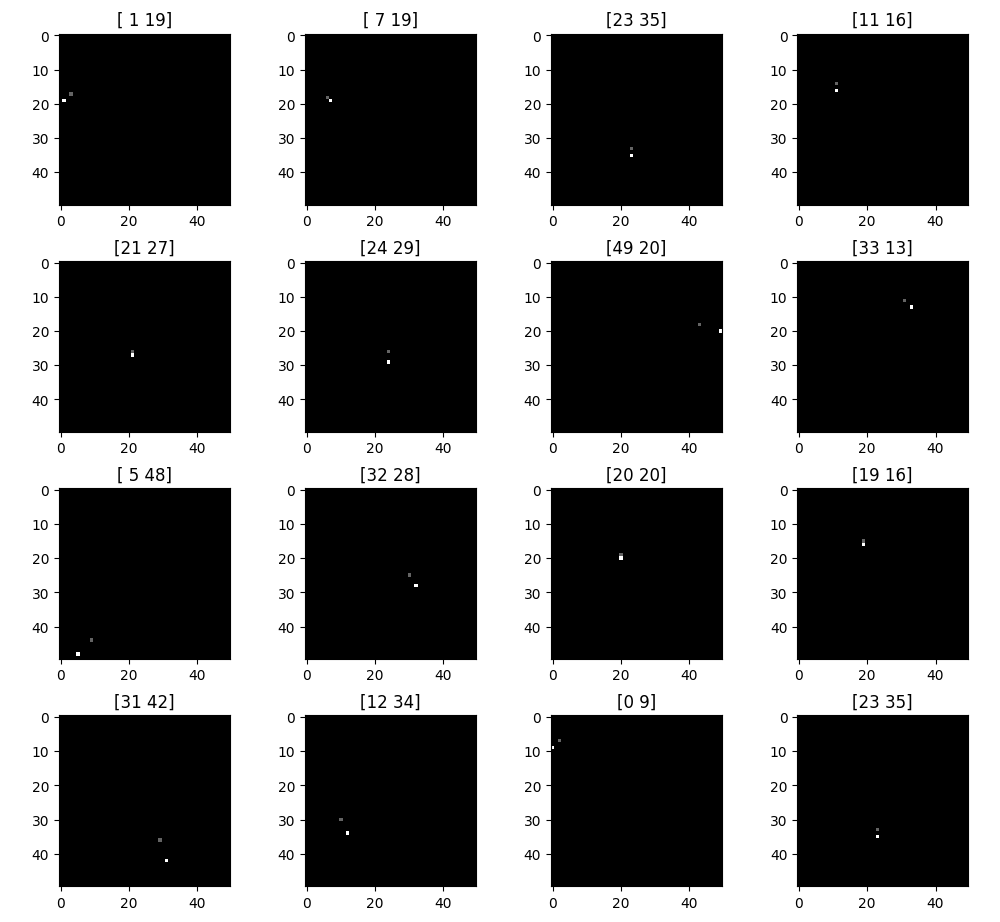

Enhancing AI-Generated Image Detection with Smarter Patch Selection
5 min readImproving the SSP method for AI-generated image detection through intelligent Top-K patch selection, multi-patch support, and vectorized preprocessing.

Improving the SSP method for AI-generated image detection through intelligent Top-K patch selection, multi-patch support, and vectorized preprocessing.

A conditional GAN-based image colorization system that breathes new life into B&W imagery using a ResNet U-Net architecture trainable on consumer GPUs.

A comprehensive local RAG pipeline with multi-format document support, ChromaDB vector storage, and 4 state-of-the-art open-source language models.

Our Silver Medal winning solution for extracting vital signs from ECG monitors — 93.7% accuracy and 4× faster than the Mask-RCNN baseline.

VGG19-based neural style transfer combining Gram matrix style loss and content preservation for arbitrary artistic image synthesis.

Comparing a custom CNN vs. pre-trained ResNet18 for pixel-precise coordinate prediction from 2500 synthetic 50×50 grayscale images.